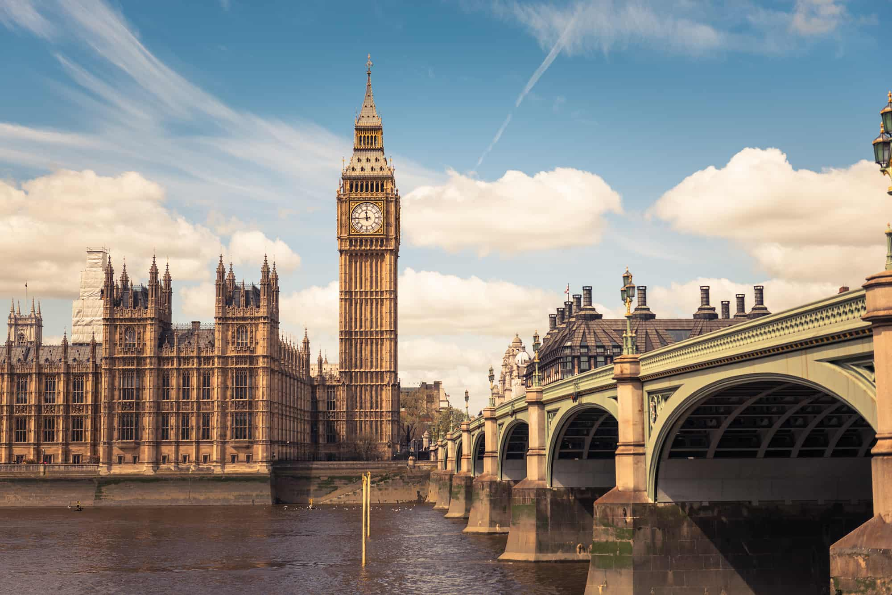

Places around the world
The first three horizontal pictures show sightseeings in London,UK.
- Big ben
-
The Houses of Parliament and Elizabeth Tower, commonly called Big Ben, are among London's most
iconic landmarks and must-see London attractions.Technically, Big Ben is the name given to the
massive bell inside the clock tower, which weighs more than 13 tons (13,760 kg)
- London Bridge
-
Until Putney Bridge opened in 1729, London Bridge was the only road crossing of the Thames
downstream of
Kingston upon Thames.
London Bridge has been depicted in its several forms, in art, literature,
and songs
- Buckingham Palace
-
Buckingham Palace is very much a working building and the centrepiece of the UK's constitutional
monarchy.Serving as the venue for many royal events and ceremonies from entertaining foreign Heads of States
to celebrating achievement at Investitures and receptions.


And these vertical images show sightseeings in Berlin,Germany.
- Brandenburg Gate
- The Brandenburg Gate is Berlin's most famous landmark and a must-see for all visitors. A symbol of
German division during the Cold War, it is now a national symbol of peace and unity.
- Berlin Cathedral
-
Berlin Cathedral, also known as the Evangelical Supreme Parish and Collegiate Church, is a
monumental German
Protestant church and dynastic tomb on the Museum Island in central Berlin.
- Berlin Wall Memorial
-
This area also includes the official monument dedicated to the memory of the divided city and the
victims communist tyranny. This is also where the Window of Remembrance stands.